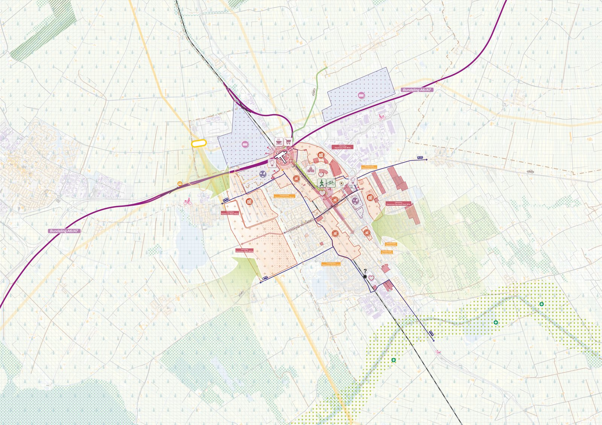
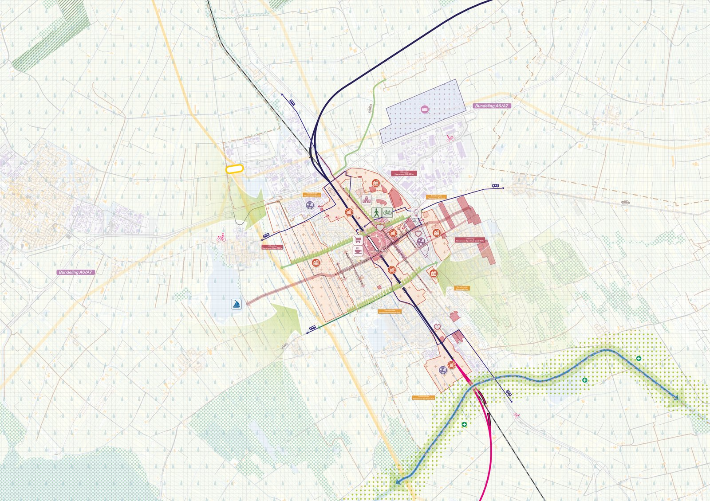
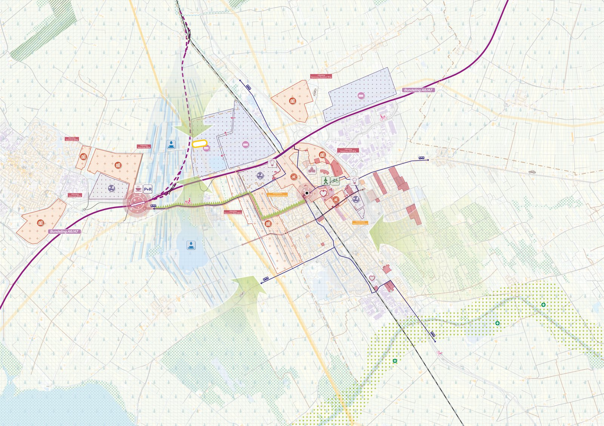
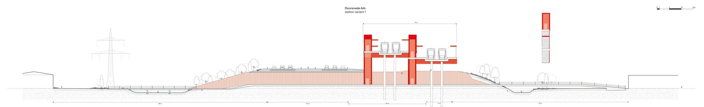
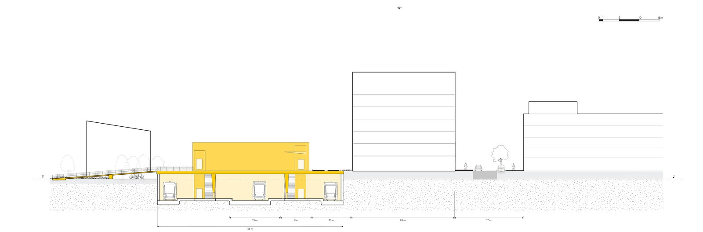
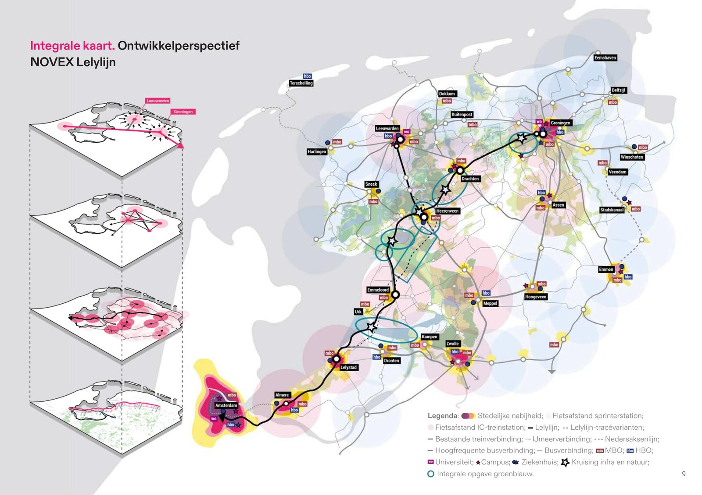

← Back to all projects

Gebiedsverdieping Heerenveen Lelylijn
Three futures for Heerenveen when the Lelylijn arrives.
Three futures for Heerenveen when the Lelylijn arrives.
The Lelylijn, a proposed rail line between Amsterdam and Groningen, could reshape the future of Heerenveen. As part of the national Masterplan Lelylijn, we carried out an integrated area study (gebiedsverdieping) for Heerenveen and Drachten: what would a new station mean for housing, work, mobility and quality of life?
We designed three future scenarios for Heerenveen. ‘Werkstad Noord’ develops the north around a new crossing station, ‘Stadsas Heerenveen’ builds on the existing track with a station moved south, and ‘Regiopoort Fryslân’ places a station between Joure and Heerenveen. The study shows the Lelylijn can work as a flywheel for the region and gives ministries, province and municipalities a base for the route decisions ahead.
As the main assistant to the project leader, I developed the base maps, designs and visuals, worked with the stakeholders and the internal team, and produced the end report.





